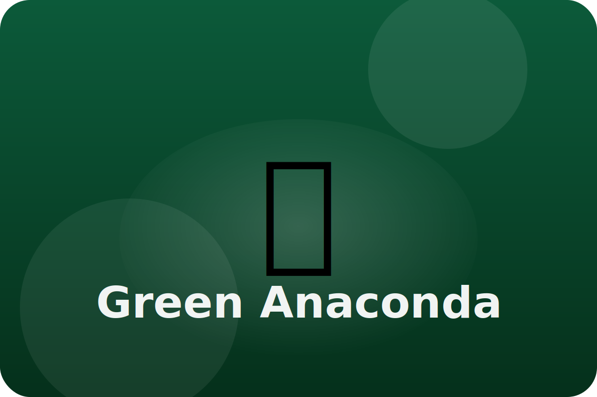

Rainforest
Life in slow rivers
Green anacondas slip through swampy waters of the Amazon. They use patience and strength to catch their meals.
Eyes on Top
Eyes and nostrils sit high on the head so the snake can see and breathe while the rest of its body stays hidden underwater.
Muscle Wrap
Strong coils squeeze around prey, gently stopping it from escaping before swallowing.
Stretchy Body
Loose jaws and stretchy skin let the snake eat animals much wider than its own head.
Keep exploring the Green Anaconda
Watch the Green Anaconda in action
Giant Green Anaconda | Animal Fun Facts